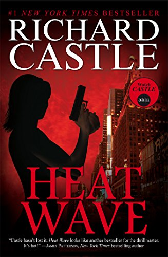

Richard Edgar Alexander Rodgers Castle è un personaggio immaginario protagonista della serie TV Castle; è un famoso scrittore di romanzi gialli che lavora come consulente per la polizia di New York. È interpretato da Nathan Fillion. Alcune opere scritte da Castle nella finzione sono realmente uscite come pseudobiblia, scritti da ghostwriter a nome proprio "Richard Castle".
Rick Castle è un autore di best seller gialli che,
dopo aver fatto morire il personaggio più famoso da lui creato, Derrick Storm, nell'ultimo romanzo,
è in piena crisi creativa, non riuscendo più a portare a termine un libro.
In questo frangente viene chiamato dalla detective del NYPD, Kate Beckett,
a collaborare alla risoluzione di una serie di omicidi, che sembrano essere
eseguiti ricalcando le scene del crimine descritte nei suoi romanzi.
Rinfrancato da questa nuova esperienza, Richard Castle riesce ad affiancare la detective
in pianta stabile come consulente della polizia, e da questa collaborazione nasce l'idea
per il nuovo personaggio protagonista dei libri dello scrittore, la detective Nikki Heat,
modellata su Kate. Dopo le prime avversità, i due protagonisti diventano una coppia affiatata
dapprima sul lavoro e successivamente anche nella vita privata.

È figlio di una spia del servizio segreto statunitense che, di nascosto,
l'ha aiutato in molti modi a partire dalla giovane età: è merito del padre,
di cui ignorava l'identità, se per esempio ha deciso d'intraprendere la carriera di scrittore.
Ricco, sicuro di se, donnaiolo e bambinone, Castle è uno dei personaggi di rilievo di New York
con una notevole esperienza riguardo agli omicidi e conoscenze con personaggi
importati in tutto il mondo da colleghi a boss della malavita.
Nonostante la sua ricchezza e una fedina penale sporca a causa di alcune sue bravate,
Richard è un uomo onesto e un buon padre nei confronti di sua figlia Alexis con cui ha un ottimo rapporto,
ma è dotato di sangue freddo nel momento in cui la vita di chi ama è in pericolo.
Nonostante sia ricco, Castle ha avuto un'infanzia difficile dovendo crescere senza un padre e
spostarsi in lungo e in largo a causa del lavoro della madre; infine all'età di undici anni
è stato testimone di un omicidio, cosa di cui non parlerà con nessuno fino alla ricomparsa dell'assassino,
che, per salvarsi la vita, ucciderà lui stesso. Dal momento in cui diventa
l'assistente di Beckett porterà un'aria nuova nella risoluzione degli omicidi
e nella vita della bella detective che all'inizio non riusciva a sopportare.
Inizialmente il suo aiuto doveva essere limitato nel consigliare i suoi nuovi colleghi
ma la determinazione e i sentimenti che inizia a provare per Beckett lo porteranno
ad agire sul campo proteggendosi a vicenda.
Fin dall'inizio Castle prova una certa attrazione nei confronti di Beckett che col tempo
si trasformerà in amore ricambiato in parte da lei.
Col passare degli anni Castle e Beckett vivono dei continui alti e bassi fino alla terza stagione
in cui Kate viene colpita da un cecchino e Castle disperato dichiara il suo amore.
Sopravvissuta al colpo Kate, ancora traumatizzata, fingerà di aver dimenticato tutto
ciò che era successo e dopo alcuni mesi la collaborazione tra i due ricomincia,
ma il loro temporeggiare riguardo ai propri sentimenti arriva al capolinea quando Kate
ammette di essere innamorata di Castle e commette un errore
(durante un interrogatorio si lascia sfuggire che ricordava tutto di quel giorno)
ferendo i sentimenti dello scrittore.
Dopo quell'episodio Castle, convinto che il futuro con Kate che aveva sperato non avrà mai inizio
(e inconsapevole che Beckett è prossima a dirgli tutto quello che prova e che fingeva di non ricordare
perché aveva paura), comincia ad evitare Kate, uscire con altre donne e affiancarsi a un poliziotto
che metterà a repentaglio la sua vita. Nel penultimo episodio della quarta stagione Castle decide
di andarsene dal distretto per sempre ma, dopo che Kate ha rivelato che il "muro" che l'aveva
resa così fredda per tutto questo tempo stava per crollare, Castle cambia idea.
Dopo essere arrivati a un punto cruciale sul caso dell'omicidio della madre di Beckett
in cui Castle tenta di dissuaderla per proteggerla, arrivano a litigare,
e lui ancora una volta le dichiarerà il suo amore ottenendo solo la collera della detective.
Dopo aver rischiato di morire, Kate capirà che l'unica cosa che vuole è Castle,
raggiungendolo a casa sua e dichiarandogli a sua volta l'amore che prova per lui.
Nella quinta e sesta stagione Castle e Beckett saranno una coppia ufficiale fino al loro fidanzamento
e alla sua scomparsa per due mesi. Privo dei ricordi del periodo in cui era sparito
riprende la sua vita con varie difficoltà fino al momento in cui rifarà la proposta di matrimonio
a Beckett per poi sposarla lo stesso giorno negli Hamptons.
Castle finalmente dopo aver indagato sulla sua scomparsa scoprirà di essere stato preso dalla
CIA per recuperare un uomo che conosceva i movimenti di Al-Quaeda e gli verrà rivelato che grazie
a lui centinaia di migliaia di vite sono salve.
Alcune opere scritte da Castle nella finzione sono realmente uscite come pseudobiblium, scritti da dei ghost-writer a nome proprio "Richard Castle".
Serie su Derrick Storm
Serie su Nikki Heat